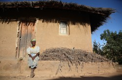
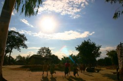
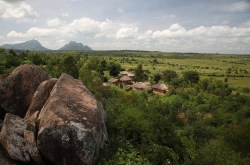

Map of Malawi
credit: CIA World Factbook
Malawi is a Sub-Saharan African country that is in need of economic development. It suffers from low population growth that could be fixed if there was more revenue going to stop HIV/AIDS and corruption. This could be accomplished if their exports would be increased. Malawi could benefit from using ICT in detecting how weather will be for the care of their agriculture. This could help their economy by increasing their agriculture product supply annually.
The Sub-Saharan African country Malawi should use ICT to help better develop its economy. It is a landlocked country in southern Africa and found east of Zambia. Lake Nyasa, which is about 580 km long, is to it's right boarder. It has sub-tropical weather, which is rainy from November to May and dry from May to November. The size of Malawi is slightly smaller than Pennsylvania. The population is at an estimated population of 15,447,500. The urban population is 19% of the total population and is growing at a 5.2% annual rate of change. Over three fourths of the population is Christian, a bit more than a tenth is Muslim, and the rest fall under other religions or no religion. Malawi has a multiparty democracy government. It gained its independence in 1964 from the UK. Its legal system is based on English common law and customary law. ("World Factbook")